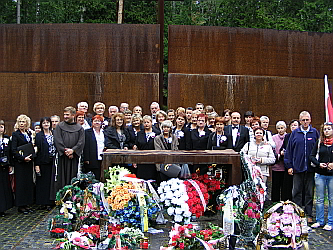
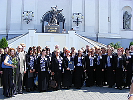
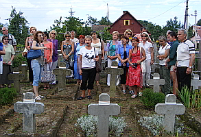
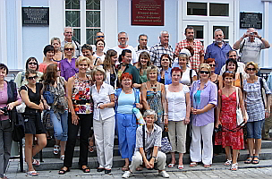

A tymczasem w Cameracie...
.
2009-08-27
W dniach 22 - 27 sierpnia 2009 chór Camerata odbyła niezwykłą artystyczno - patriotyczno - historyczną podróż po Białorusi (Grodno, Nowogródek, Zaosie, Mir, Nieśwież, Mereczowszczyzna) i Rosji (Katyń, Smoleńsk).

Dla Cameraty, podróż ta to oddanie hołdu ofiarom ludobójstwa dokonanego przez bolszewików na elicie narodu polskiego (Katyń, Kuropaty). To odwiedzenie kraju lat dziecinnych Adama Mickiewicza (Zaosia i Nowogródka). To odwiedzenie miejsca urodzenia jednego z największych synów narodu polskiego Tadeusza Kościuszki (Mereczowszczyzna).To także poznanie Grodna - miasta Jagiellonów i króla Stefana Batorego, miejsca Sejmu Rozbiorowego i więzienia ostatniego polskiego króla S. Augusta Poniatowskiego, miasta Elizy Orzeszkowej i Orląt Grodzieńskich. To wreszcie zobaczenie świadectw świetności Rzeczypospolitej na wschodzie, wpisanych obecnie na listę UNESCO - ordynacji Radziwiłłów w Nieświeżu i Mirze. Cameracka młodzież składała kwiaty i zapalała znicze na grobach pomordowanych rodaków, recytowała „Świteziankę” Mickiewicza w srebrzystych wodach Świtezi.




© Stowarzyszenie Muzyczne Chór Camerata Wieliczka